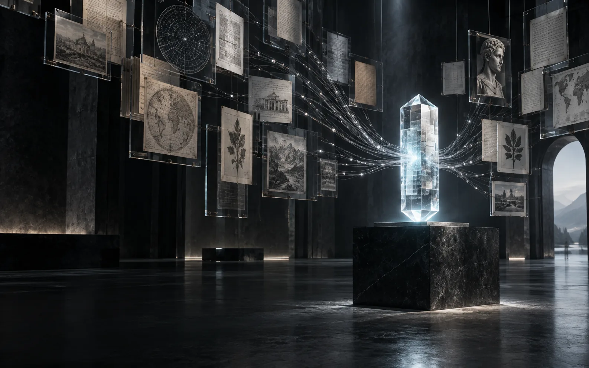
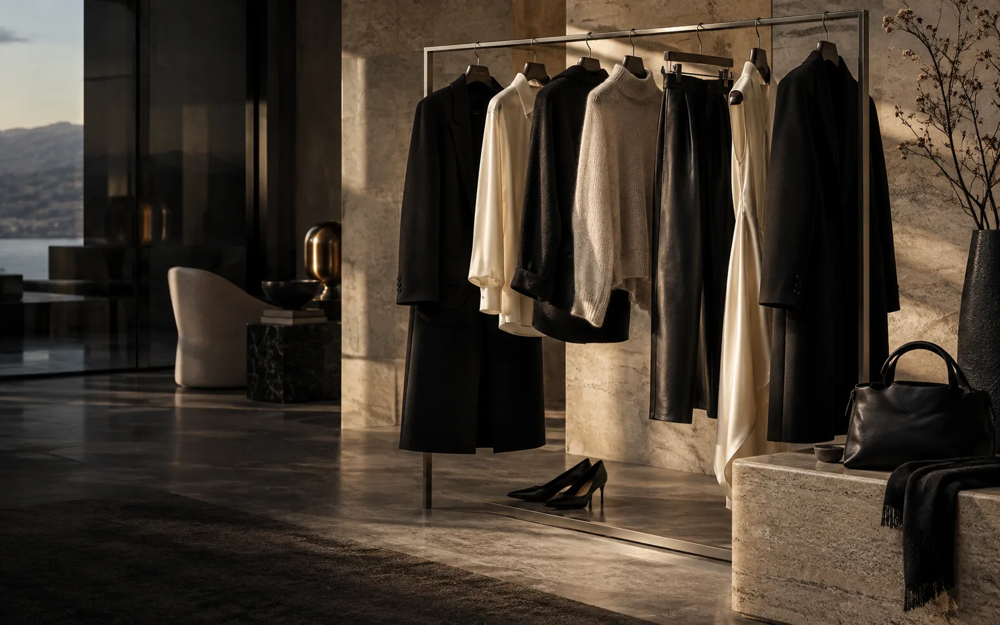

PRABHAS BANGARUGARI / PORTFOLIO2026 — IN PROGRESS
AI SYSTEMS SIMULATION DIGITAL PRODUCTS
PrabhasBangarugari.
01 / AN INTRODUCTION
I make complex ideas
visible and usable.
SELECTED WORK / AN INDEX01 — 04
01 /SteelSim + ACAMISLIVE SIMULATION + AGENTIC VISION
02 /RAG-Based AI AssistantPREVIEW THE RETRIEVAL SYSTEM
03 /Praj Chess EngineSOURCE + ENGINE NOTES
04 /Fashion CompanyLIVE STOREFRONT
FOUR DIFFERENT PROBLEMS. ONE PORTFOLIO.
SELECTED WORK / 2025—26
Projects with
something to say.
Different domains. One common thread: build the real thing, make it understandable, and keep the claims honest.

ILLUSTRATIVE PROJECT VISUAL QUESTION → EVIDENCE RAG-Based AI Assistant An offline handbook retrieval system that traces agriculture-related answers to source pages using BM25-style ranking. Its public experience is in preparation. LOCAL RETRIEVAL PAGE-LEVEL CITATIONS VIEW PROJECT PREVIEW
ART DIRECTION + REAL UI EDITORIAL → COMMERCE Fashion Company A live storefront where editorial presentation meets responsive category browsing and product discovery. Explore the interface in its real setting. LIVE STOREFRONT RESPONSIVE BROWSING VISIT FASHION COMPANYHOW I THINK ABOUT BUILDING
The interesting part is
making it work.
Model the reality.
SteelSim models equipment and process flow. Its interface makes those relationships legible before a run begins.
Show the reasoning.
The RAG assistant cites its sources. ACAMIS is designed to trace agent assessments, escalation, and human approval back to operating evidence.
Make it usable.
Fashion Company pairs editorial presentation with product discovery. The same attention to hierarchy helps technical tools feel clear.
ABOUT / THE PERSON BEHIND THE WORK
PB / 2026From the mill floor
to the move tree.
I build systems that reveal how they work — from a simulated steel plant’s live state to the source page behind an answer.
I’m Prabhas Bangarugari, a computer science student focused on AI and machine learning. I built SteelSim, a deterministic industrial digital twin with a visual plant builder, process telemetry, and incident replay. I designed ACAMIS as its companion seven-agent architecture for autonomous analysis and human-authorised decisions; the full agent system remains at the specification stage.
I also developed an offline Windows handbook assistant with BM25-style retrieval and page-level citations. Praj is my UCI chess engine combining Monte Carlo Tree Search with Stockfish policy and value advice. Fashion Company is a live storefront shaped around responsive product discovery.
PRABHAS / CURRENT PRACTICESIMULATION · EVIDENCE · INTERFACE
NOW /
SOON /AI systems and industrial simulation.
Small Language Model — training the next idea from the ground up.
FUTURE /Business Operator — an evidence-led system in the making.